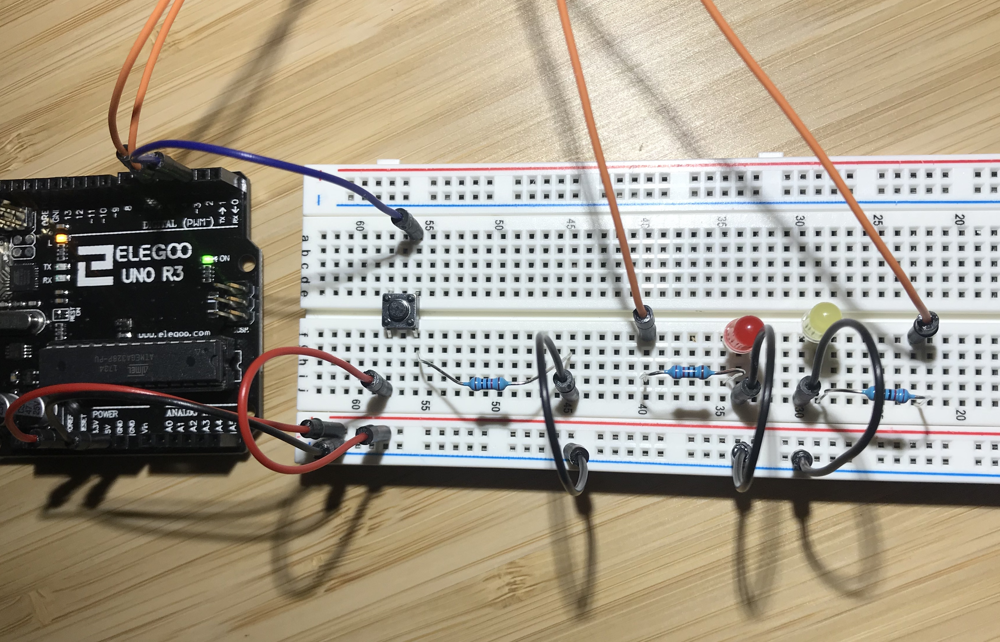
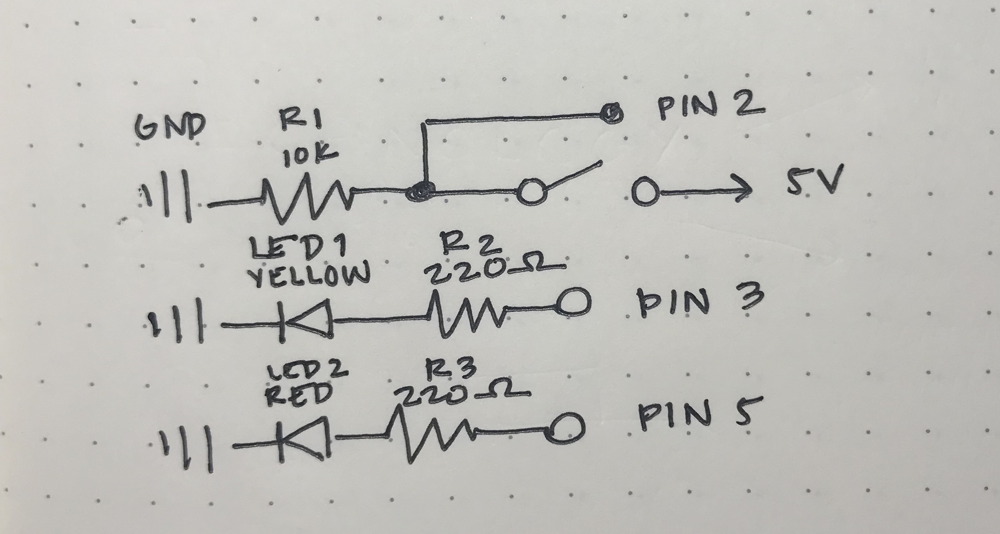

Reine Abubakar's Assignment 2
Code Snippet
// Reine Abubakar
// HCDE 439
// A2: Lights that Fade!
// This program has two LEDs that light up when a button is pressed down. One fades on press
// and the other stays a constant brightness.
const int ledPin = 5; // fading LED connected to digital pin 5
const int buttonPin = 2; // button is connected to digital pin 2
const int solidLightPin = 3; // steady LED connected to digital pin 3
int buttonState = 0; // reads the pushbutton status (pressed or not)
// the setup function runs once when you press reset or power the board
void setup() {
pinMode (buttonPin, INPUT); // initialize buttonPin as input
pinMode (ledPin, OUTPUT); // initializes ledPin as output
pinMode (solidLightPin, OUTPUT); // initializes solidLighPin as output
}
// the loop function runs over and over again forever
void loop() {
buttonState = digitalRead(buttonPin); // reads the state of the pushbutton value
// if the button is pressed, the following code runs
if (buttonState == HIGH) {
digitalWrite(solidLightPin, HIGH); // if the button is pressed, the solid light turns on
// if the button is pressed, the other LED fades from minimum to maximum in increments of 5
for (int fadeValue = 0; fadeValue <= 255; fadeValue +=5) {
analogWrite(ledPin, fadeValue); // sets the light value from 0 to 255
delay(20); // 20 ms delay to create fading effect
}
// if the button is pressed, the LED fades from maximum to minimum in increments of 5
for (int fadeValue = 255; fadeValue >= 0; fadeValue -=5){
analogWrite(ledPin, fadeValue); // sets the light value from 0 to 255
delay(20); // 20 ms delay to create fading effect
}
} else {
// if the button is not pressed, the following code runs
digitalWrite(solidLightPin, LOW); // if the button is not pressed, the lights turn off
}
}
Circuit
The circuit is composed of one button and two LED lights: one red and one yellow. They are connected to pins 2, 5, and 3 respectively.
Schematic
For red and yellow LEDs, there is a 1.8V drop and a 20mA desired current.
V = 5V - 1.8V = 3.2V
V = I X R
3.2V = 0.02A x R
R = 3.2V / 0.02A
R = 160 ohms
For the ideal current of 20mA, the resistor should be 160 ohms. In the available kit, we have a resistor of 220 ohms, and that is what I used for both the LEDs to ensure that the LED does not burn out. For the button:
V = 5V
V = I X R
5V = I X 10,000 ohms
0.0005 A = I
I used a 10K resistor for the button to use just enough power to use it to prevent wasting energy.
Circuit Operation

hen the button is pressed, the red LED lights up and fades on loop, and the yellow light stays a constant brightness.